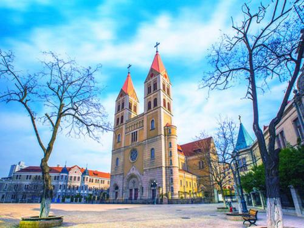
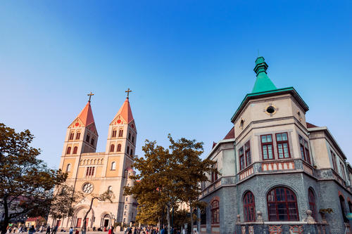
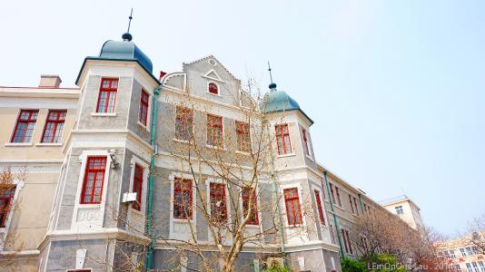

天主教堂
时间：2019/11/11

【简介】
青岛天主教堂本名天主教青岛教区浙江路圣弥厄尔教堂。（部分报道称：圣爱弥尔教堂），由德国设计师毕娄哈依据哥德式和罗马式建筑风格而设计。拟建教堂应高百米，适逢二战爆发，德国禁止本土资金外流，该教堂不得不修改图纸，即建成现在规模。 教堂始建于1932年，于1934年竣工。塔身高56米，是建国前山东省最高的建筑。
【建筑布局】
占地面积11480平方米，其中建筑面积6301.54平方米。教堂以黄色花岗岩和钢筋混凝土砌成，表面雕以简洁优美的纹案。 窗户为半圆拱形，线条流畅，显得庄重而朴素。大门上方设一巨大玫瑰窗，两侧各耸立一座钟塔，塔身高56米，红瓦覆盖的锥形塔尖上各竖立一个4.5米高的巨大十字架，塔内悬有四口大钟，一旦钟乐鸣奏，声传数里之外。 进入教堂，是一个高达18米，可容千人的宽敞明亮的大厅，色彩斑斓的玻璃花窗透射出柔和的光线。大厅东西两侧设有走廊，后面设有两个大祭台，四个小祭台，厅的穹顶绘以圣象壁画，灯光炫目，充满浓厚的宗教气氛。 屋顶覆盖舌头红瓦，其气势庞大，且又古朴典雅。

教堂装饰系采用意大利文艺复兴时期形式。堂内大厅高18米，宽敞明亮，顶棚悬有七个大吊灯，后方设有祭台，配之穹顶的圣像壁画，堪称庄严美观。 可容纳教徒千人，是青岛地区最大的哥特式建筑，也是中国唯一的祝圣教堂，同时也是基督教建筑艺术的杰作。